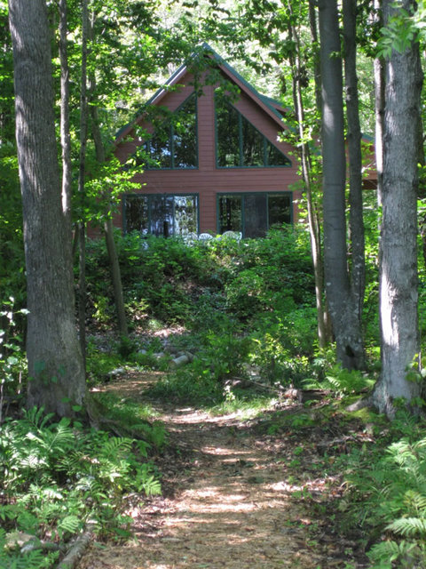

Woodland beauty, rippling shores and quiet pleasures await you. Come and relax.

This secluded, lakefront getaway is on beautiful Green Lake in Interlochen, Michigan. The lodge is nestled on a ten-acre parcel with 450 feet of private lake frontage. The large patio is perched upon a blackberry bluff with tranquil views of the lake and surrounding forest. Charming nature paths meander through the trees and open to a lakefront picnic table, sitting area and fire pit. The waterfront is equipped with a paddleboat, two kayaks and canoe for your use. (Dock, boat hoist, and nearby launch are also available.)
Built in 2006, this pine-paneled lodge very comfortably sleeps nine. Two bedrooms on the main floor each have a full-size bed. In addition, one of these bedrooms has a lofted twin bed. The dormitory upstairs includes one full-size bed, two twin beds and a private bathroom. Blackberry Bluff is located 15 miles southwest of Traverse City, across Green Lake from the Interlochen Arts Academy. Attractions within a short drive include Sleeping Bear Dunes National Lakeshore, Leland's historic Fishtown, wineries, and numerous bike and hiking trails. (Click here for details and more attractions.)
The village of Interlochen, with grocery stores, restaurants, miniature golf, ice cream and quaint shops, is a convenient three miles away.
A week at Blackberry Bluff is the perfect, relaxing, getaway for your family. Paddle, swim and fish in a large, protected cove on Green Lake.
Escape to your private nature retreat and discover the plentiful wildlife viewing opportunities. Listen to the loon calls as you watch the sun rise over Green Lake.
(Click here for more photos.)